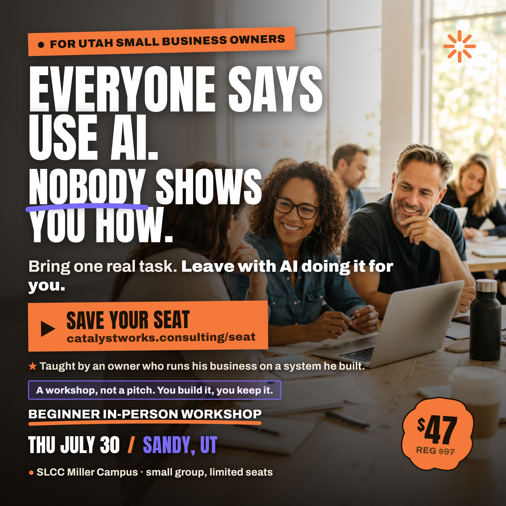
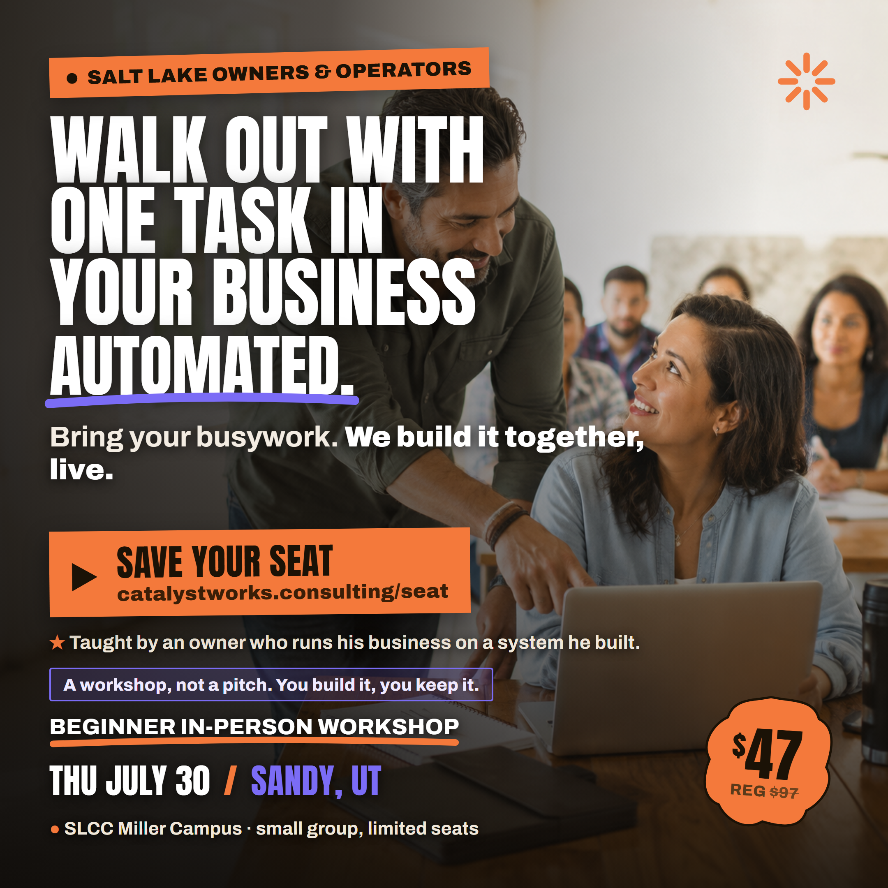
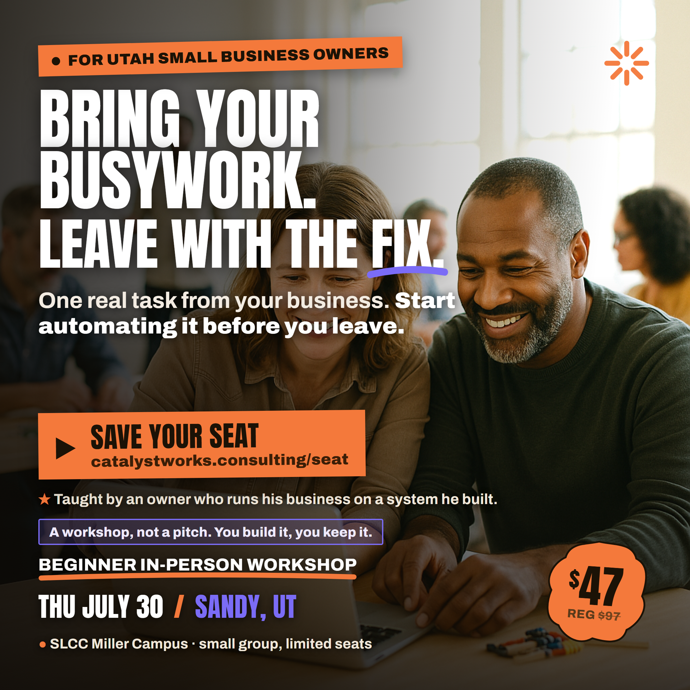

Beginner in-person AI workshop · Thu July 30 · Sandy, UT · $47 (reg $97). Same seminar photos, same bright type. New: a real call to action, a concrete outcome, a credibility line, and an anti-pitch trust line.



CTA (all 3): Save your seat → catalystworks.consulting/seat
Credibility (all 3): "Taught by an owner who runs his business on a system he built."
Anti-pitch trust line (all 3): "A workshop, not a pitch. You build it, you keep it."
Event band (all 3): Beginner In-Person Workshop · Thu July 30 · Sandy, UT · SLCC Miller Campus · small group, limited seats · $47 (reg $97)
A: "Bring one real task. Leave with AI doing it for you."
B: "Bring your busywork. We build it together, live."
C: "One real task from your business. Start automating it before you leave."
| Gate | Bar | A (lead) | B | C | Verdict |
|---|---|---|---|---|---|
| design-audit /100 | ≥90 | 95 | 100 | 90 | PASS |
| ctq-social /10 | 9 | 9 | 9 | 9 | PASS |
| hormozi-lead-gen /10 | ≥8 | 8.5 | 8.75 | 9.0 | PASS |
| council (skeptical Utah owner) | would register | C would register (lean); A strong hook challenger; anti-pitch line added per council's #1 fix | CLEARED | ||
| voice + humanizer | pass | Credibility softened to "a system he built"; C outcome hedged to "start automating"; no em-dashes, no hype, no refund language | PASS | ||
The skeptical read said the single biggest remaining conversion risk was the "is this a disguised sales pitch" fear, common for a cheap in-person workshop from an unknown host. Fix applied to all three: the line "A workshop, not a pitch. You build it, you keep it." True to the format, in voice, no hype. Council also endorsed C as the primary and A's headline as the strongest hook, which is exactly the lead + split-test setup here.
Run A as the lead (strongest problem-recognition hook for owners told to "use AI" with no how). Split-test C (tightest, most truth-safe promise, highest lead-gen and buyer-lens scores) and B (best done-with-you framing for a warmer audience). All three carry the CTA, the concrete outcome, and the trust stack. The bar is registrations, and every creative now asks for one.